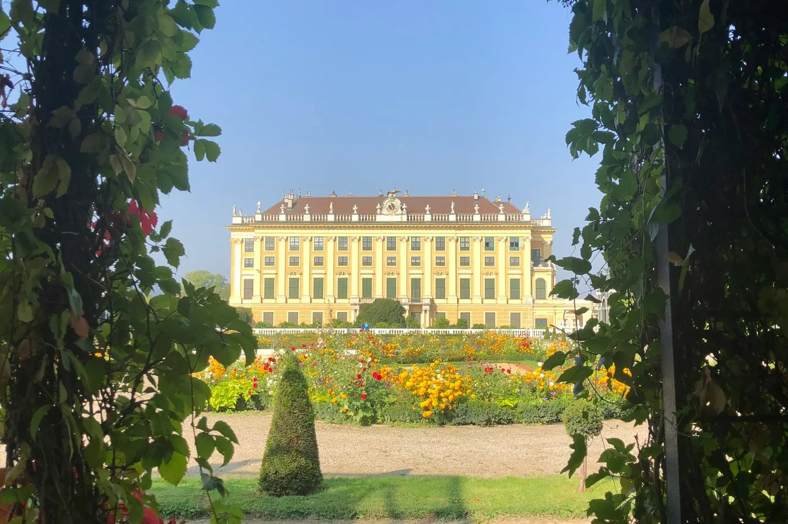
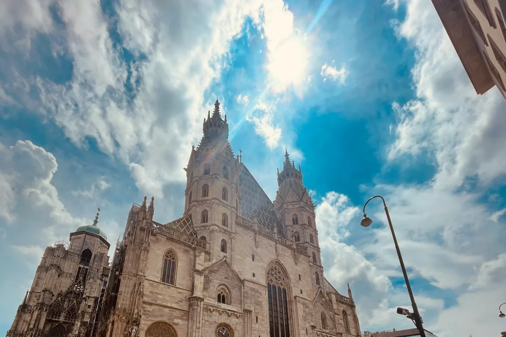

Vodiči / Beč
Beč — kad ići, aerodrom, šta obavezno vidi

Kad ići u Beč — najbolje vreme za grad
Proleće (april-maj) i rana jesen (septembar-oktobar) nude prijatne temperature za duge šetnje i manje gužve u muzejima. Leto je toplo, ali retko ekstremno vruće kao na jugu Evrope, i pogodno za sedenje u parkovima i baštama kafića. Decembar je poseban razlog za posetu — božićne pijace (Christkindlmarkt) na Rathausplatzu i širom grada stvaraju praznično okruženje, ali i veće gužve i više cene smeštaja. Beč je i dobra destinacija za zimski gradski odmor jer je najveći deo znamenitosti u zatvorenom (muzeji, palate, koncertne dvorane).
Aerodrom Beča i put do centra grada
Aerodrom Beč-Švehat (VIE) je oko 18–20 km jugoistočno od centra. Najbrža opcija je CAT voz (City Airport Train), direktno do stanice Wien Mitte za oko 16 minuta, cena oko 12–15€. Jeftinija alternativa je S-Bahn linija S7, ista pruga sa više usputnih stanica, traje oko 24–25 minuta i košta oko 4,40–5,40€ — ta karta važi i za dalju vožnju bečkim javnim prevozom (metro, tramvaj, autobus). Autobus do Westbahnhofa košta oko 9€. Taksi je oko 35–45€, a pred-rezervisani transfer zna biti jeftiniji za veće grupe.
Koliko košta putovanje u Beč — orijentacione cene
- Dvorac Šenbrun — osnovna tura (22 sobe) oko 20€ po osobi, duža tura (40 soba) oko 28€; ulaz u park je besplatan.
- Sisi muzej i carski apartmani u Hofburgu — oko 20€ po osobi; kombinovana karta sa Šenbrunom (Sisi Pass) uz uštedu oko 25% u odnosu na pojedinačne ulaznice.
- Obrok bečki šnicla — 18–25€ po osobi u tradicionalnom restoranu (Beisl).
- Kafa (Melanž) u kafeu — 4–6€, uz to se u bečkim kafeima po tradiciji sedi duže bez žurbe.
Šta obavezno vidi u Beču za 3-4 dana
- Dvorac Šenbrun — nekadašnja letnja rezidencija Habzburga, sa velikim baroknim vrtom i pogledom sa Gloriete.
- Hofburg i Sisi muzej — carska palata u centru grada, apartmani cara Franca Jozefa i carice Elizabete.
- Katedrala Sv. Stefana (Stephansdom) — simbol grada, popni se na toranj za pogled na krovove centra.
- MuseumsQuartier — muzejski kompleks (moderna umetnost, dizajn) sa dvorištima gde se leti sedi napolju.
- Prater — park sa čuvenim točkom (Riesenrad), dobar za opuštenije popodne.

Gde jesti u Beču — lokalna bečka kuhinja
Probaj klasični Wiener Schnitzel (bečku šniclu, obično od teletine) u tradicionalnom Beislu, Sachertorte uz kafu u nekom od istorijskih kafea (Café Sacher, Café Central) i Kaiserschmarrn (slatka pahuljasta palačinka) za dezert. Naschmarkt je najveća pijaca u gradu — dobro mesto za brz obrok i sveže sastojke, uz nešto veće cene nego u kvartovskim prodavnicama. Bečka kafeanska kultura je deo UNESCO nematerijalnog nasleđa — sedenje uz jednu kafu satima je sasvim uobičajeno i očekivano.
Skrivena mesta u Beču van glavnih ruta
- Karmelitermarkt — pijaca u kvartu Leopoldstadt, lokalna atmosfera bez turističke gužve.
- Kalenberg (Kahlenberg) — vidikovac na obodu grada sa panoramskim pogledom na Beč i Dunav, dostupan tramvajem i autobusom.
- Alsergrund — mirniji stambeni kvart sa lepom secesijskom arhitekturom, blizu centra.
- Donaukanal (Dunavski kanal) — šetalište sa street art muralima i letnjim barovima na vodi, popularno kod lokalaca.
Praktični saveti pre rezervacije
- Dokumenta — Austrija je u EU i Šengenu; proveri uslove ulaska za svoje državljanstvo pre puta.
- Karte za javni prevoz — jednodnevna ili višednevna karta (Wiener Linien) se isplati ako planiraš više vožnji dnevno; validiraj kartu pre ulaska ako nije unapred aktivirana.
- Rezervacije unapred — Šenbrun i Hofburg u sezoni znaju imati redove; online karta sa fiksnim terminom štedi vreme čekanja.
- Muzejski ponedeljak — deo manjih muzeja ne radi ponedeljkom, proveri radno vreme pre planiranja dana.